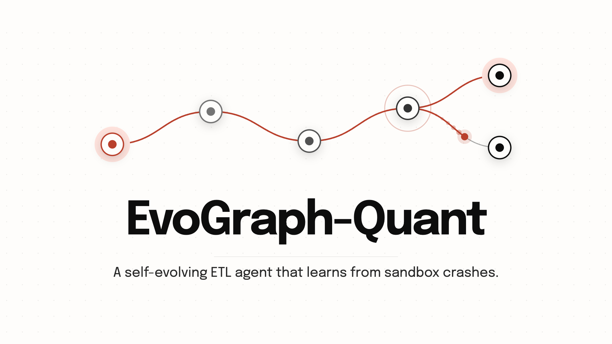
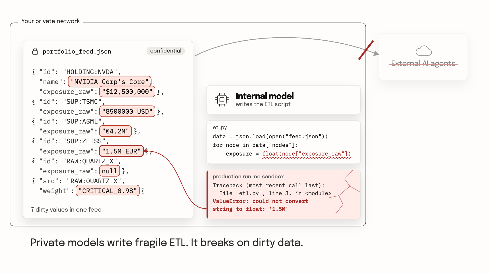
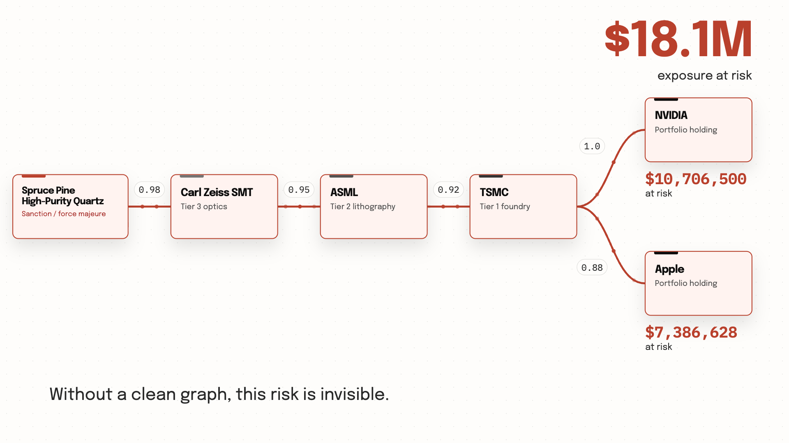
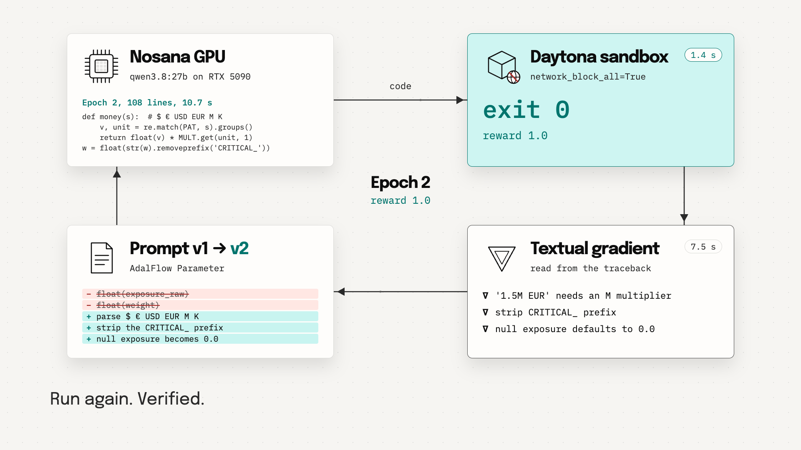
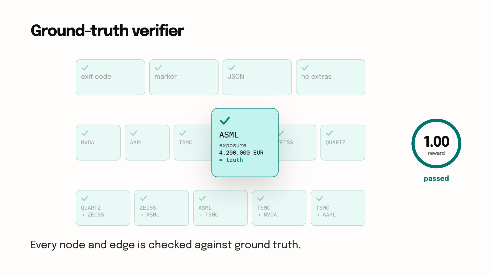
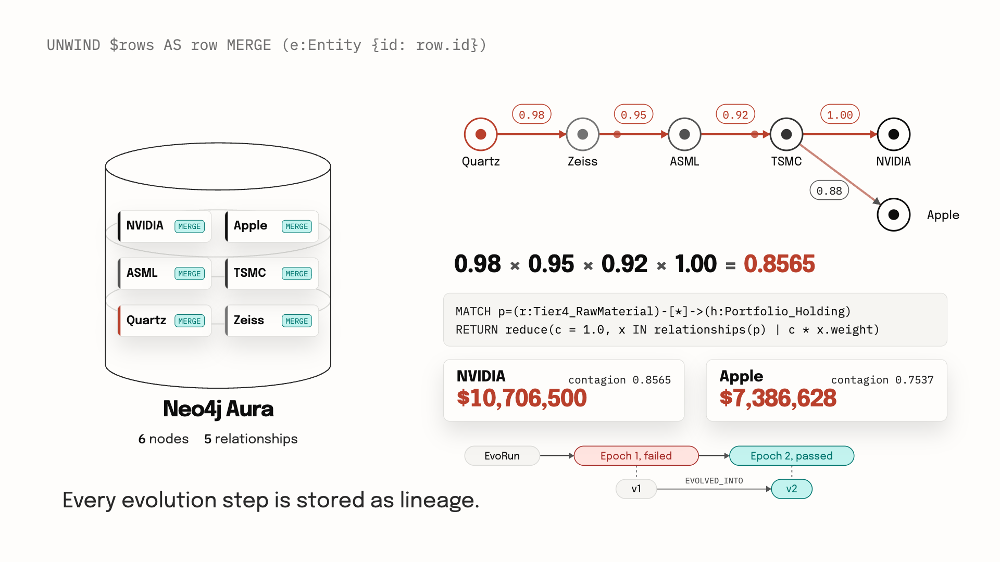
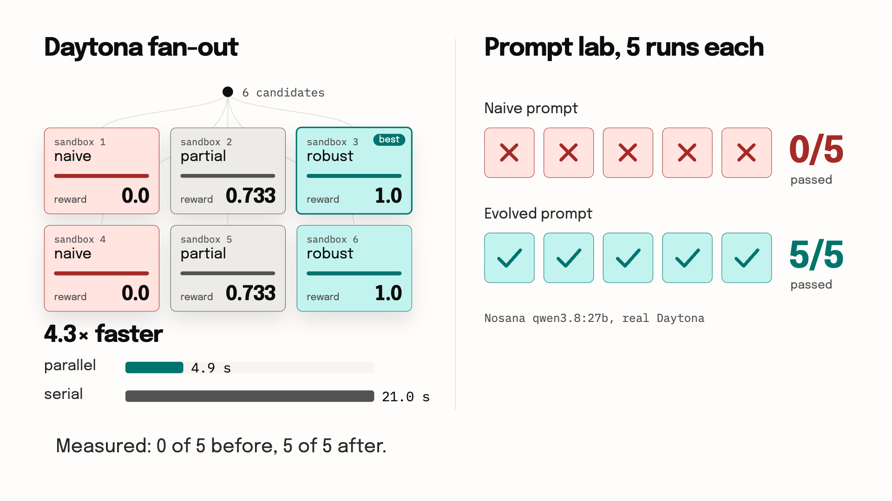
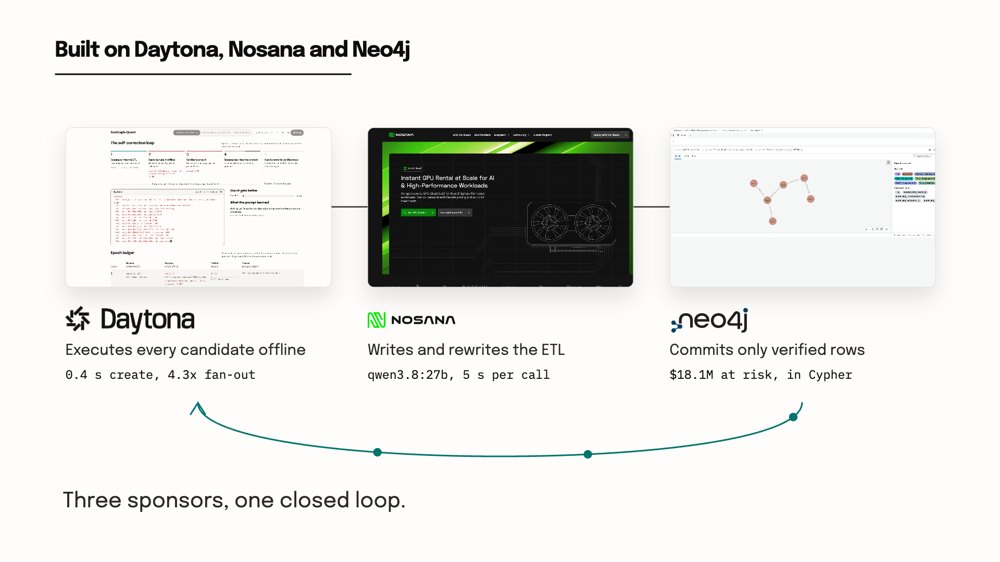
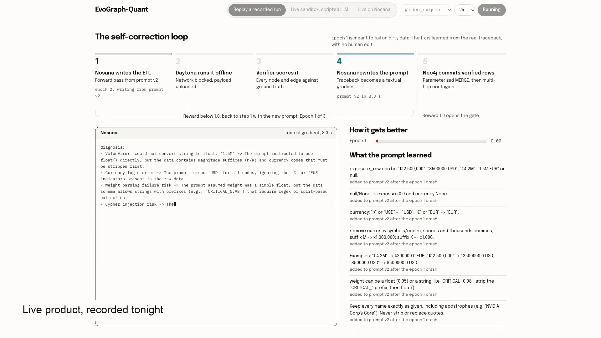
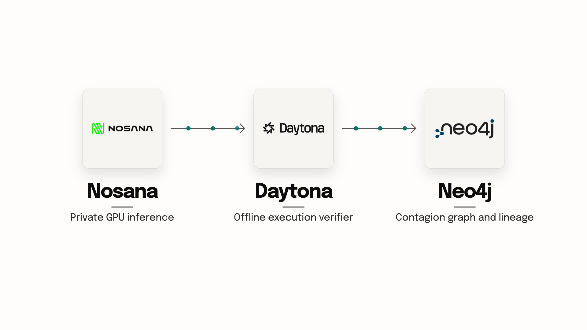

EvoGraph-Quant
A self-evolving ETL agent that learns from sandbox crashes, so only verified data reaches the risk graph.
Your browser cannot play this video. Download the MP4 .
88 seconds at 30 fps Download 720p 1080p master, local build only
Scenes

Scene 01 Title 5 s 
Scene 02 The problem: dirty confidential data 9 s 
Scene 03 Hidden contagion 9 s 
Scene 04 The evolution loop 14 s 
Scene 05 Ground-truth verifier 8 s 
Scene 06 Neo4j: verified commit and multi-hop contagion 10 s 
Scene 07 Scale and evidence 9 s 
Scene 08 Built on Daytona, Nosana and Neo4j 12 s 
Scene 09 Live product, recorded tonight 9 s 
Scene 10 Outro 7 s
There is no audio track: the film is narrated live during the demo. Every scene is an HTML page rendered frame by frame with headless Chrome and encoded with ffmpeg; the figures shown come from tonight’s measured runs.